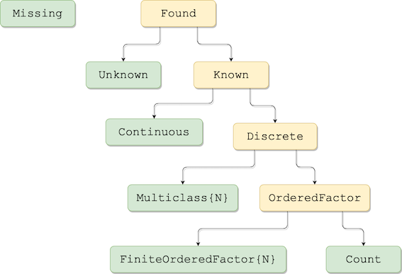

Getting Started
Installation instructions
Cheatsheet
Glossary
Plug-and-play model evaluation
To load some data install the RDatasets in your load path and enter
julia> using RDatasets
julia> iris = dataset("datasets", "iris"); # a DataFrameand then split the data into input and target parts:
julia> X = iris[:, 1:4];
julia> y = iris[:, 5];In MLJ a model is a struct storing the hyperparameters of the learning algorithm indicated by the struct name. Assuming the DecisionTree package is in your load path, we can instantiate a DecisionTreeClassifier model like this:
julia> using MLJ
julia> @load DecisionTreeClassifier verbosity=1
import MLJModels ✔
import DecisionTree ✔
import MLJModels.DecisionTree_.DecisionTreeClassifier ✔
julia> tree_model = DecisionTreeClassifier(max_depth=2)
MLJModels.DecisionTree_.DecisionTreeClassifier(pruning_purity = 1.0,
max_depth = 2,
min_samples_leaf = 1,
min_samples_split = 2,
min_purity_increase = 0.0,
n_subfeatures = 0,
display_depth = 5,
post_prune = false,
merge_purity_threshold = 0.9,
pdf_smoothing = 0.05,) @ 1…47Important: DecisionTree and most other packages implementing machine learning algorithms for use in MLJ are not MLJ dependencies. If such a package is not in your load path you will receive an error explaining how to add the package to your current environment.
Once loaded, a model is evaluated with the evaluate method:
julia> evaluate(tree_model, X, y,
resampling=CV(shuffle=true), measure=cross_entropy, verbosity=0)
(measure = MLJ.CrossEntropy[cross_entropy],
measurement = [0.317715],
per_fold = Array{Float64,1}[[0.0327898, 0.0327898, 0.355982, 0.54328, 0.38746, 0.553985]],
per_observation = Array{Array{Float64,1},1}[[[0.0327898, 0.0327898, 0.0327898, 0.0327898, 0.0327898, 0.0327898, 0.0327898, 0.0327898, 0.0327898, 0.0327898 … 0.0327898, 0.0327898, 0.0327898, 0.0327898, 0.0327898, 0.0327898, 0.0327898, 0.0327898, 0.0327898, 0.0327898], [0.0327898, 0.0327898, 0.0327898, 0.0327898, 0.0327898, 0.0327898, 0.0327898, 0.0327898, 0.0327898, 0.0327898 … 0.0327898, 0.0327898, 0.0327898, 0.0327898, 0.0327898, 0.0327898, 0.0327898, 0.0327898, 0.0327898, 0.0327898], [0.198851, 0.198851, 0.198851, 0.198851, 0.198851, 0.198851, 0.198851, 0.198851, 0.198851, 0.198851 … 0.198851, 0.198851, 0.198851, 0.198851, 0.198851, 4.12713, 0.198851, 0.198851, 0.198851, 0.198851], [0.231641, 0.231641, 4.12713, 0.231641, 0.231641, 0.231641, 0.231641, 0.231641, 4.12713, 0.231641 … 0.231641, 0.231641, 0.231641, 0.231641, 0.231641, 0.231641, 0.231641, 0.231641, 0.231641, 0.231641], [0.231641, 0.231641, 0.231641, 0.231641, 0.231641, 0.231641, 4.12713, 0.231641, 0.231641, 0.231641 … 0.231641, 0.231641, 0.231641, 0.231641, 0.231641, 0.231641, 0.231641, 0.231641, 0.231641, 0.231641], [0.096572, 0.096572, 0.096572, 0.096572, 3.90835, 0.096572, 0.096572, 0.096572, 3.90835, 3.90835 … 0.096572, 0.096572, 0.096572, 0.096572, 0.096572, 0.096572, 0.096572, 0.096572, 0.096572, 0.096572]]],)Evaluating against multiple performance measures is also possible. See Evaluating model performance for details.
Training and testing by hand
Wrapping the model in data creates a machine which will store training outcomes:
julia> tree = machine(tree_model, X, y)
Machine{DecisionTreeClassifier} @ 1…52Training and testing on a hold-out set:
julia> train, test = partition(eachindex(y), 0.7, shuffle=true); # 70:30 split
julia> fit!(tree, rows=train);
[ Info: Training Machine{DecisionTreeClassifier} @ 1…52.
julia> yhat = predict(tree, X[test,:]);
julia> yhat[3:5]
3-element Array{UnivariateFinite{String,UInt8,Float64},1}:
UnivariateFinite(setosa=>0.01612903225806452, versicolor=>0.9677419354838711, virginica=>0.01612903225806452)
UnivariateFinite(setosa=>0.9677419354838709, versicolor=>0.016129032258064516, virginica=>0.016129032258064516)
UnivariateFinite(setosa=>0.9677419354838709, versicolor=>0.016129032258064516, virginica=>0.016129032258064516)
julia> cross_entropy(yhat, y[test]) |> mean
0.39288444293059455Notice that yhat is a vector of Distribution objects (because DecisionTreeClassifier makes probabilistic predictions). The methods of the Distributions package can be applied to such distributions:
julia> broadcast(pdf, yhat[3:5], "virginica") # predicted probabilities of virginica
3-element Array{Float64,1}:
0.01612903225806452
0.016129032258064516
0.016129032258064516
julia> mode.(yhat[3:5])
3-element Array{CategoricalArrays.CategoricalString{UInt8},1}:
"versicolor"
"setosa"
"setosa"One can explicitly get modes by using predict_mode instead of predict:
julia> predict_mode(tree, rows=test[3:5])
3-element Array{CategoricalArrays.CategoricalString{UInt8},1}:
"versicolor"
"setosa"
"setosa"Machines have an internal state which allows them to avoid redundant calculations when retrained, in certain conditions - for example when increasing the number of trees in a random forest, or the number of epochs in a neural network. The machine building syntax also anticipates a more general syntax for composing multiple models, as explained in Learning Networks.
There is a version of evaluate for machines as well as models:
julia> evaluate!(tree, resampling=Holdout(fraction_train=0.5, shuffle=true),
measure=cross_entropy,
verbosity=0)
(measure = MLJ.CrossEntropy[cross_entropy],
measurement = [0.359694],
per_fold = Array{Float64,1}[[0.359694]],
per_observation = Array{Array{Float64,1},1}[[[0.0609811, 0.0327898, 0.0327898, 0.0609811, 0.0327898, 0.0327898, 4.12713, 3.15202, 0.0609811, 0.0327898 … 0.0609811, 0.0327898, 0.0327898, 0.0327898, 0.0327898, 3.15202, 0.0327898, 0.0327898, 0.0609811, 0.0609811]]],)Changing a hyperparameter and re-evaluating:
julia> tree_model.max_depth = 3
3
julia> evaluate!(tree, resampling=Holdout(fraction_train=0.5, shuffle=true),
measure=cross_entropy,
verbosity=0)
(measure = MLJ.CrossEntropy[cross_entropy],
measurement = [0.0688904],
per_fold = Array{Float64,1}[[0.0688904]],
per_observation = Array{Array{Float64,1},1}[[[0.0327898, 0.0327898, 0.0327898, 0.0327898, 0.0327898, 0.0327898, 0.0327898, 0.0327898, 0.0327898, 0.0327898 … 0.0327898, 0.0327898, 0.0327898, 0.0327898, 0.0327898, 0.0327898, 0.0327898, 0.0327898, 0.0327898, 0.0327898]]],)Next steps
To learn a little more about what MLJ can do, take the MLJ tour, and then return to the manual as needed. Read at least the remainder of this page before considering serious use of MLJ.
Prerequisites
MLJ assumes some familiarity with the CategoricalValue and CategoricalString types from CategoricalArrays.jl, used here for representing categorical data. For probabilistic predictors, a basic acquaintance with Distributions.jl is also assumed.
Data containers and scientific types
The MLJ user should acquaint themselves with some basic assumptions about the form of data expected by MLJ, as outlined below.
machine(model::Supervised, X, y)
machine(model::Unsupervised, X)Each supervised model in MLJ declares the permitted scientific type of the inputs X and targets y that can be bound to it in the first constructor above, rather than specifying specific machine types (such as Array{Float32, 2}). Similar remarks apply to the input X of an unsupervised model. Scientific types are julia types defined in the package ScientificTypes.jl, which also defines the convention used here (and there called mlj) for assigning a specific scientific type (interpretation) to each julia object (see the scitype examples below).
The basic "scalar" scientific types are Continuous, Multiclass{N}, OrderedFactor{N} and Count. Be sure you read Container element types below to be guarantee your scalar data is interpreted correctly. Most containers also have a scientific type.

julia> scitype(4.6)
Continuous
julia> scitype(42)
Count
julia> x1 = categorical(["yes", "no", "yes", "maybe"]);
julia> scitype(x1)
AbstractArray{Multiclass{3},1}
julia> X = (x1=x1, x2=rand(4), x3=rand(4)) # a "column table"
(x1 = CategoricalArrays.CategoricalString{UInt32}["yes", "no", "yes", "maybe"],
x2 = [0.338647, 0.199328, 0.916576, 0.0110741],
x3 = [0.860289, 0.263816, 0.987185, 0.417746],)
julia> scitype(X)
Table{Union{AbstractArray{Continuous,1}, AbstractArray{Multiclass{3},1}}}Tabular data
All data containers compatible with the Tables.jl interface (which includes all source formats listed here) have the scientific type Table{K}, where K depends on the scientific types of the columns, which can be individually inspected using schema:
julia> schema(X)
(names = (:x1, :x2, :x3),
types = (CategoricalArrays.CategoricalString{UInt32}, Float64, Float64),
scitypes = (Multiclass{3}, Continuous, Continuous),
nrows = 4,)Figure 1. Part of the scientific type heirarchy in ScientificTypes.jl.
Inputs
Since an MLJ model only specifies the scientific type of data, if that type is Table - which is the case for the majority of MLJ models - then any Tables.jl format is permitted. However, the Tables.jl API excludes matrices. If Xmatrix is a matrix, convert it to a column table using X = MLJ.table(Xmatrix).
Specifically, the requirement for an arbitrary model's input is scitype(X) <: input_scitype(model).
Targets
The target y expected by MLJ models is generally an AbstractVector. A multivariate target y will generally be a vector of tuples. The tuples need not have uniform length, so some forms of sequence prediction are supported. Only the element types of y matter (the types of y[j] for each j).
Specifically, the type requirement for a model target is scitype(y) <: target_scitype(model).
Querying a model for data types
One can inspect the admissible scientific types of a model's input and target. If one has a Model instance model, one can use scitype(model):
julia> tree = DecisionTreeClassifier();
julia> scitype(tree)
(input = Table{#s13} where #s13<:(AbstractArray{#s12,1} where #s12<:Continuous),
target = AbstractArray{#s30,1} where #s30<:Finite,)If, however, the relevant model code has not been loaded, one can nevertheless extract the scitypes from the model type's MLJ registry entry:
julia> info("DecisionTreeClassifier")
OrderedCollections.LittleDict{Any,Any,Array{Any,1},Array{Any,1}} with 13 entries:
:package_uuid => "7806a523-6efd-50cb-b5f6-3fa6f1930dbb"
:package_license => "unkown"
:load_path => "MLJModels.DecisionTree_.DecisionTreeClassifier"
:is_pure_julia => true
:is_supervised => true
:package_url => "https://github.com/bensadeghi/DecisionTree.jl"
:package_name => "DecisionTree"
:name => "DecisionTreeClassifier"
:is_probabilistic => true
:target_scitype => AbstractArray{_s163,1} where _s163<:Finite
:supports_weights => false
:input_scitype => Table{_s13} where _s13<:(AbstractArray{_s12,1} where _s1…
:is_wrapper => falseSee also Working with tasks on searching for models solving a specified task.
Container element types
Models in MLJ will always apply the mlj convention described ScientificTypes.jl to decide how to interpret the elements of your container types. Here are the key aspects of that convention:
Any
AbstractFloatis interpreted asContinuous.Any
Integeris interpreted asCount.Any
CategoricalValueorCategoricalString,x, is interpreted asMulticlassorOrderedFactor, depending on the value ofx.pool.ordered.Strings andChars are not interpreted asFinite; they haveUnknownscitype. Coerce vectors of strings or characters toCategoricalVectors if they representMulticlassorOrderedFactordata.In particular, integers (including
Bools) cannot be used to represent categorical data.
To coerce the scientific type of a vector or table, use the coerce method (re-exported from ScientificTypes.jl).